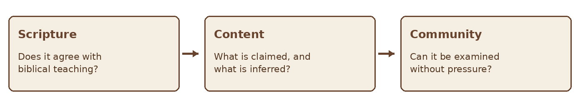
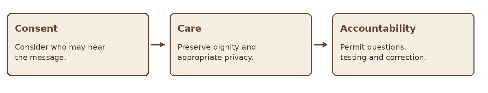

GIFTS OF THE HOLY SPIRIT · BIBLE STUDY
The Gift of Prophecy
A Bible study on speaking for the good of the church and weighing what is said
STUDY SIX • PROPHECY
“The others should weigh what is said.” — 1 Corinthians 14:29
Paul names prophecy among the Spirit’s gifts and gives unusually detailed instructions for its use in the gathered church. This study examines its purpose, the need to weigh a message, and the importance of love and order. Christians differ on how New Testament prophecy relates to Old Testament prophets and how this gift operates today. The course will distinguish the text from those interpretations.
Scripture at a Glance
| Passage | Contribution to the study |
|---|---|
| 1 Corinthians 12:4–11, 27–31 | Prophecy is one of the varied gifts given for the common good. |
| 1 Corinthians 13:1–13 | Love is indispensable; present knowledge and prophecy are partial. |
| 1 Corinthians 14:1–5, 24–33 | Prophecy can strengthen, encourage, and console; speakers and hearers follow an orderly process. |
| 1 Thessalonians 5:19–22 | Do not despise prophecies; test everything and hold fast what is good. |
| Acts 11:27–30; 21:10–14 | Agabus appears in two accounts involving predicted events and communal response. |
| 1 John 4:1–3 | Believers are instructed to test spiritual claims. |
1 What Is Prophecy in This Study
In the New Testament, prophecy is Spirit related speech offered to others. Paul names it in 1 Corinthians 12 and discusses its use in chapter 14. The passage does not reduce prophecy to predicting future events: Paul emphasizes understandable speech that builds up, encourages, and consoles the church. Acts also records prophetic warnings about events to come.
Christians disagree about whether and how prophecy continues today, and about the authority of a contemporary prophetic message. These questions should be discussed carefully. This study treats Scripture as the authoritative standard and follows Paul’s explicit instruction that what is spoken in the church be weighed.
Figure 1 Prophecy in a discerning community
2 The Purpose Is to Build Up
In 1 Corinthians 14:3 Paul says that the person who prophesies speaks to people for their strengthening, encouragement, and consolation. His comparison with uninterpreted tongues in the gathered church stresses intelligibility and benefit to others. A message should therefore be understandable and accountable to the people it is meant to serve.
“Building up” does not mean every message will feel pleasant. A truthful warning or correction may be difficult. Its aim and manner still matter. Prophecy must not become a means of humiliation, control, or personal display. Paul begins the chapter by directing believers to pursue love.
| Purpose in 1 Corinthians 14:3 | Question to ask |
|---|---|
| Strengthening | Does this help people stand firm in Christ? |
| Encouragement | Does this call them toward faithful action? |
| Consolation | Does this bring truthful comfort to those in need? |
3 Weigh What Is Said
Paul instructs two or three prophets to speak and others to weigh what is said (1 Corinthians 14:29). First Thessalonians 5:20–21 similarly holds together openness and testing. The church should not reject a claim simply because it needs examination; neither should it accept a claim merely because it is introduced as a word from God.
Weigh the message by Scripture and its teaching about Christ. Ask whether the speaker has separated an initial impression from an interpretation, whether factual claims can be checked, and what response is being requested. When the message affects another person’s reputation or a major decision, involve those with appropriate responsibility and protect privacy.

Figure 2 Three checks for a proposed prophetic message
4 Speak With Humility and Order
First Corinthians 14:26–33 places contributions to worship within an orderly gathering so that all may learn and be encouraged. A person should not use a claimed message to override responsible leadership, force immediate action, or silence questions. Paul’s instruction to weigh what is said presumes that a speaker can allow examination.
A helpful form of speech names the level of confidence honestly: “I think this may be worth praying about,” followed by the content, is different from “God has told me you must do this.” Stronger claims require stronger grounds. Where there is uncertainty, say so. If a message proves mistaken, correct it without blaming the hearer.
5 Prophecy and Prediction
Acts 11:27–30 describes Agabus predicting a famine and the disciples responding with aid. Acts 21:10–14 describes his warning about Paul’s journey; those present urge Paul not to go, but Paul continues, and they finally entrust the matter to the Lord’s will. These narratives show that a warning, its interpretation, and the action proposed by hearers must be considered carefully.
A future oriented claim can affect jobs, relationships, finances, or safety. Do not make another person’s consequential choice for them on the strength of an untested prediction. Record the claim accurately, invite appropriate counsel, and avoid revising the original words after events occur.
| Layer | Example | Question |
|---|---|---|
| Message | “I sense a difficult season ahead.” | What exactly was communicated? |
| Interpretation | “This refers to your current job.” | What supports that application? |
| Decision | “You must resign now.” | Who is responsible, and what other facts matter? |
6 Protect the People Involved
A prophetic claim about someone’s private life, sin, or future can cause serious harm if shared carelessly. Do not announce sensitive matters publicly without a sound basis and appropriate process. Avoid using spiritual language to gain authority over another person, isolate them from counsel, or demand secrecy.

Figure 3 The manner of sharing matters
A message that contradicts Scripture or requires manipulation should be rejected. A message that cannot yet be evaluated can be held with patience. The speaker’s willingness to be corrected is an important part of a healthy posture.
7 A Practical Prophecy Journal
When a message is offered, record its original wording before discussing meaning or outcome. Share personal information only with those who have a responsible reason to receive it.
| Prompt | Record |
|---|---|
| What was actually said? | Write the words and date without later additions. |
| What is the proposed meaning? | Keep interpretation separate from the message. |
| What does Scripture address? | Read relevant passages in their context. |
| What facts can be checked? | Identify evidence and remaining uncertainty. |
| Who should weigh it? | Invite mature, appropriate counsel. |
| What action is justified now? | Choose a proportionate response without pressure. |
| What happened later? | Revisit the original words and correct errors honestly. |
Reflection and Discussion
- How do love and the common good shape prophetic speech?
- Why does Paul tell others to weigh what is said?
- What is the difference between a message, its interpretation, and a proposed decision?
- How can a church stay open to the Spirit while protecting people from coercion?
Practice Case
During a small group meeting, a member says, “I believe our group should support a family facing a difficult month.” The member then adds, “God says each of you must give a specific amount tonight.” The group knows the family has asked for help, but it has not discussed their needs or consent to share details.
First identify the concern that may be worth receiving: a family needs support. Then separate the proposed amount and urgent demand from that concern. Ask what is known, who should speak with the family, and how the group can respond generously without pressuring members or exposing private information. Discuss how the speaker could restate the message with humility and allow it to be weighed.
| Step | Group response |
|---|---|
| Receive | Listen to the concern without committing to every claim. |
| Weigh | Check facts, Scripture, consent, and who has responsibility. |
| Act | Offer appropriate help through a clear, voluntary process. |
A Prayer for Truth and Love
Father, teach us to listen to Your Word and to serve one another in love. If Your Spirit prompts someone to speak, give clarity, humility, and patience. Help us weigh what is said without fear or contempt, keep what is good, and correct what is mistaken. Protect the people affected by our words and keep our eyes on Jesus Christ. Amen.
Further Study
Read 1 Corinthians 12–14 as a unit, with particular attention to 14:1–5 and 14:26–33. Then read 1 Thessalonians 5:19–22, Acts 11:27–30, and Acts 21:10–14. Compare what the passages explicitly report with the conclusions readers may draw from them.